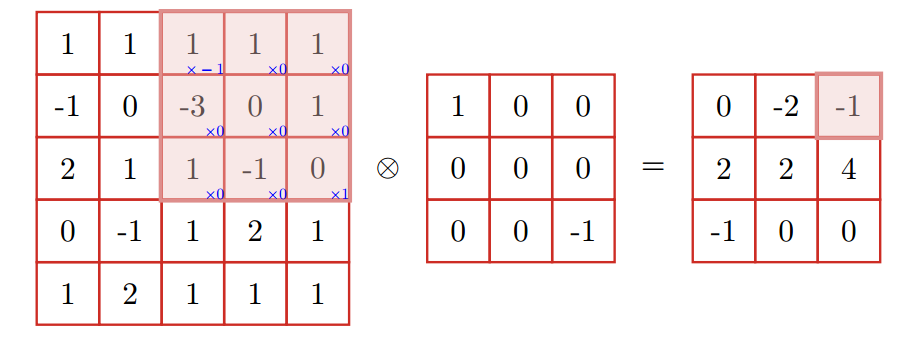
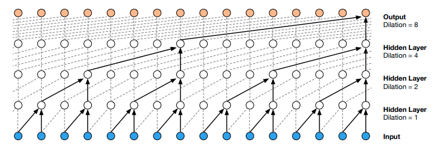
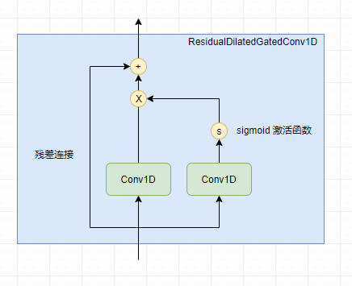

深入理解CNN及其网络架构设计
尽管RNN是了不起的设计，但是在实践中，CNN更受青睐，尤其是计算力不够的情况。
在最初学习神经网络时，大家都可能做过MNIST分类任务，使用的模型就是多层感知机（又称为前馈神经网络、全链接网络），然后也得到很好的性能，其实主要是数据集简单。然而，在复杂的任务中，多层感知机存在两个问题：
- 参数太多
- 难以提取局部不变性特征
为解决这两个问题，引入卷积神经网络（Convolutional Neural Network， CNN或ConvNet），一种具有局部连接、权重共享等特性的深层前馈神经网络。说白了就是使用卷积运算来替代Dense网络中的矩阵乘法运算。
CNN具有如下三种特点：
- 局部链接（相邻两层的神经元只在指定窗口内存在链接）
- 权重共享（滤波器对于指定层的所有的神经元都是相同 ）
- 汇聚（起下采样、降维作用）
普通卷积
设滤波器长度（大小）为$m$，权重为$[w_1, \dots, w_m]$，它和一个序列类型数据，如时间序列$\boldsymbol{x} = [x_{1}, \dots, x_{n}]$的卷积为，
其中$t = 1,2,3,…,n$，$y_{t}$为卷积后的结果。可以看到，卷积运算就是对序列从左到右按固定大小的滑动窗口相乘后求和，和数学中的卷积不同的是计算结果不需要反转，因此也称为互相关（cross-correlation）运算。
类似地，给定一个图像$\boldsymbol{X} \in \mathbb{R}^{M \times N}$，和滤波器大小为$\boldsymbol{X} \in \mathbb{R}^{m \times n}$，那么卷积结果为，
通常情况下，$m \lt M,n \lt N$。
它们的互相关为，
CNN 可以说是和我们人类处理视觉问题的过程十分相似，从左到右，由上到下去扫描视野中的内容，然后聚焦。
二维卷积示意图，

参数说明
filters：滤波器数量，一个滤波器指一个权重独立的卷积核。
kernel_size：卷积核大小，一般是奇数组合，如（3,5）方便取整。
strides：步长，每次滑动窗口移动的大小，可以成倍减少输出维度。
data_format：channels_last (default) or channels_first。
padding：”valid”：不处理、不允许超过边界；”causal”：不让看到右边数据；”same”：填充边界使得输出和原理大小一致。
dilation_rate：卷积核膨胀率。
目前的卷积神经网络一般由卷积层、汇聚层（Pooling）和全连接层交叉堆叠而成 。
输出尺寸计算
假设输入样本为$n \times n \times 3$，卷积核为$f \times f$，步长为$s$，padding为$p$，那么卷积后输出的尺寸为：
注意到是向下取整结果。
卷积核大小
卷积核的大小一般是一般是奇数组合，其关乎模型的感受野和模型参数量。在相同感受野情况下，卷积核大小越大，模型的参数就越多，反之则越小。
对于$1 \times 1$的卷积核则比较特殊，在不改变感受野的情况下，起到对数据的降维或升维作用，即channel的大小的改变。无论是对数据的降维或升维，得到的新输出的每个channel的信息都来自上一层所有channel信息的组合，因此$1 \times 1$的卷积可以让各个channel的信息互相交互。$1 \times 1$卷积本身也是可学习参数，因此模型的复杂度增加，如果该卷积核还配合激活函数使用，可以提升模型的非线性特性，增强拟合能力。
因此，总结来说，$1\times1$卷积作用大致有三点：
- 对数据的降维或升维
- 增加非线性（激活函数的存在）
- 促进跨channel信息的交互
转置卷积
转置卷积也称为反卷积（Deconvolution） ，可以实现低纬特征到高纬特征的转换。
考虑普通卷积情况。假设有一个5维的向量$\boldsymbol{x}$，在卷积核$\boldsymbol{w} = [w_1, w_2, w_3]^{\top}$的操作下，获得的3维向量可以表示为，
我们另这个矩阵为，
这是一个稀疏矩阵。而转置卷积则是矩阵$\boldsymbol{C}$的转置的卷积，
因此可以看到，转置卷积实现低纬特征到高纬特征的转换。通常，转置卷积用在生成任务上。
膨胀卷积
膨胀卷积也称为空洞卷积，在卷积核中插入空洞以扩大感受野而又不增加参数。其卷积过程可以用下图描述，

膨胀大小一般依次取$r=1, 2, 4, 8, 16, \dots$，通过层堆叠且每层按指数扩大膨胀率来获得长距离依赖。取 dilated rate 为 $2^{n}$，n 为层数。膨胀卷积适合处理长序列，如传感器的多维时间序列、长文本等等。
门卷积
这里可以对比下LSTM中的门机制，
像LSTM模型一样，可以给卷积一个Gate，控制信息的流通
注意上式是两个卷积，超参数一致但不共享权重。这种门机制早在RNN上就存在，只不过把它迁移到CNN上。
当然不止是CNN可以这么做，其他的网络结构也可以，即，
Gated ConvNet 来自论文 Convolutional Sequence to Sequence Learning。
残差结构及其推广
众所周知，残差网络在CNN中相对流行，并有很多扩展。
ResNet

如果层$f$使用$\operatorname{relu}(x)$激活函数，那么负数取值会失活，这时通过叠加原来$f$的输入$x$避免神经元进入失活状态，从而解决梯度消失问题。
结合以上门卷积，我们有残差门卷积，这也是很自然得到的结构，
不过要注意两者的维度要一致，如果不一致可以通过一定的形状变换技巧处理为一致。注意到，假如$\sigma(\operatorname{Conv}_2(\boldsymbol{X})) \rightarrow 0$上述结构依旧有信息往下游流动，确保信息没有丢失。因此残差结构不仅仅解决梯度消失问题。
论文WAVENET: A GENERATIVE MODEL FOR RAW AUDIO中，把残差结构、膨胀卷积结合起来在生成模型中获得很好的效果。
以上结构推广开来，有Highway Networks。
Highway Networks
Highway Networks 的结构，
需要注意以上变量的形状一致。$T$为transform门，可以理解为把信息$x$分为量部分，它们的比例分别是$T(\boldsymbol{x},\boldsymbol{W_{T}})$和$1-T(\boldsymbol{x},\boldsymbol{W_{T}})$，前以部分用于$H(\boldsymbol{x}, \boldsymbol{W_{H}})$，后一部分不加处理保留。可以看到，残差结构为其特例。如果另$T(\boldsymbol{x}, \boldsymbol{W_{T}})=\sigma(\operatorname{Conv}_2(\boldsymbol{X}),H(\boldsymbol{x}, \boldsymbol{W_{H}})=\operatorname{Conv}_{1}(\boldsymbol{X})$，那么有，
这不就是我们熟悉的形式！
DenseNet
DenseNet把所有层以前馈形式连接，从而起到特征重用的可能。DenseNet的缺点是内容不友好。
池化层
我一般把池化层分为两大类：
- 非参数化池化
- 参数化池化
非参数化池化
非参数化池化包括SumPooling、AveragePooling、MaxPooling、GlobalAveragePooling、GlobalMaxPooling。在NLP、时间序列等序列类型数据中，考虑序列非定长，池化的时候需要Mask处理。
参数化池化
在处理序列数据时，直接使用SumPooling、AveragePooling、MaxPooling、GlobalAveragePooling、GlobalMaxPooling都有点粗暴，容易带来噪声。考虑到池化的目的是汇聚信息（保留关键信息，去掉次要信息，因此也可以理解为特殊的采样方式），这个过程也可以参数化。如何参数化？答案在论文Neural machine translation by jointly learning to align and translate中，其提到一种加权平均向量序列来获得背景向量的方法，当然这只是基本思路或者说是启发，那么如何计算加权平均的权重呢？很简单，既然是神经网络，那就让权重也自己学习出来就好了。假设有向量序列，注意是向量序列，即每个元素也是向量，
考虑到不定长的情况存在，如在传感器的多维时序中，不同样本的长度是不一样的。计算权重直接用两个全连接网络，
然后加权平均，
如果序列是不定长，处理好掩码问题。我们可以认为，这也是注意力机制的一种，不过没有query，也就是没有主动聚焦的信息点，因此可以把以上方法理解为一种参数化的显著性注意力。为提高信息的整合能力，毕竟把序列变为向量，或多或少会丢失信息。此池化方法甚至可以多头化，即类似于Attention Is All You Need中提到的多头注意力，不过要注意过拟合问题。
需要注意，无论那种Pooling操作，如果数据是时间序列，那么结果肯定是导致位置信息丢失。那么，参数化池化的好处是能够根据下游任务筛选信息。
在CV中，常见的Pooling还有ROI Pooling（Region of Interest），最早是在论文Fast R-CNN中提出，用于把相关区域抽出出来。
如果是文本序列的池化，相关的方法还有很多，后期有空再分享。
位置信息
论文Convolutional Sequence to Sequence Learning在用CNN处理Seq2Seq问题提及Position Embeddings，为向量序列提供位置信息，比较CNN并不能像RNN一样，天然地把位置信息融入到编码序列中。因此，如果使用CNN架构，可以使用Position Embeddings强化位置的概念。
有趣的是，同样是解决Seq2Seq问题的论文Attention Is All You Need，提到一种基于Sin、Cos的位置信息的编码方法，
有了位置向量后，同一个字或词由于其位置不同，那么其向量也是不同。那么，至于Seq2Seq问题，是纯Attention方案好还是CNN+Attention方案好呢？答案交给时间吧。
此外，还可以使用可学习的位置Embedding，即
加强CNN的位置感。从另外一个角度看，这种方式增加模型的参数和非线性，加强模型的拟合能力。以上论文提到，通过参数学习的 position embedding 的效果和采用固定的 position embedding 相差无几，不过后者计算量更少。
CNN在文本上的应用
CNN、TextCNN、VDCNN、RCNN、DPCNN、DGCNN等模型，后期再展开。在序列建模中，CNN比RNN的优势是并行训练。事实上，CNN在解决NLP问题已经成为标配。
总结
本文我们讲述了普通卷积、膨胀卷积、门卷积、残差结构以及这些结构的组合等常用CNN网络架构。还包括参数化的池化层以及增强CNN位置感的PositionEmbedding，这些都是CNN模型的应用技巧。
Wide & Deep融入网络中的深层特征与浅层特征，能够更好地权衡泛化风险与特征挖掘的问题，这也是CNN网络中常见的一种架构之一。此外，还有分组卷积（GroupCNN）、深度可分离卷积等架构，后期有需要再深入。
参考
[1] Language Modeling with Gated Convolutional Networks
[2] WAVENET: A GENERATIVE MODEL FOR RAW AUDIO
[3] Neural machine translation by jointly learning to align and translate
[4] Highway Networks
[5] http://colah.github.io/posts/2015-08-Understanding-LSTMs/